Program Studi Unggulan
Prodi Perbankan Syariah
Mahasiswa akan mempelajari prinsip-prinsip ekonomi Islam, instrumen keuangan syariah, manajemen risiko syariah, hukum perbankan syariah, dan masih banyak lagi. Lulusan prodi ini akan memiliki pemahaman mendalam mengenai prinsip ekonomi Islam dan dapat menerapkannya dalam praktik di dunia perbankan.
Lulusan dalam bidang perbankan syariah memiliki peluang karir di lembaga keuangan syariah seperti bank syariah, lembaga keuangan mikro syariah, atau perusahaan asuransi syariah. Selain itu, lulusan juga dapat bekerja di sektor konsultasi keuangan, lembaga pemerintah, atau organisasi non-pemerintah yang berfokus pada pengembangan keuangan.
Prodi Manajemen Bisnis Syariah
Lulusan manajemen bisnis syariah memiliki pengetahuan mengenai prinsip ekonomi Islam, manajemen keuangan syariah, hukum bisnis syariah, dan produk keuangan berbasis syariah. Lulusan prodi ini dapat bekerja di perusahaan konvensional yang mengimplementasikan prinsip-prinsip ekonomi Islam.
Lulusan manajemen bisnis syariah dapat bekerja di perusahaan konvensional yang mengimplementasikan prinsip-prinsip ekonomi Islam dalam operasionalnya. Banyak perusahaan multinasional maupun perusahaan lokal mulai melirik penerapan prinsip syariah dalam bisnis mereka, sehingga permintaan akan lulusan manajemen bisnis syariah semakin meningkat.
Prodi Sistem Informasi
Lulusan prodi Sistem Informasi memiliki beragam keterampilan yang dapat diterapkan di berbagai bidang pekerjaan. Mereka memiliki pemahaman mendalam tentang pengembangan perangkat lunak, manajemen database, analisis sistem, keamanan informasi, dan teknologi jaringan. Hal ini membuat mereka memiliki peluang untuk bekerja di berbagai posisi, baik dalam perusahaan teknologi maupun industri lain yang membutuhkan keahlian dalam pengelolaan informasi.
Lulusan prodi Sistem Informasi memiliki peluang yang sangat luas. Mereka dapat bekerja di perusahaan teknologi seperti perusahaan perangkat lunak, perusahaan start-up, perusahaan jasa teknologi informasi, hingga menjadi seorang ahli keamanan informasi atau analis sistem di berbagai perusahaan.
Prodi Komputerisasi Akuntansi
Keahlian yang dimiliki oleh lulusan Prodi Komputerisasi Akuntansi sangat variatif, yaitu mengelola data, menganalisis informasi keuangan, dan menggunakan perangkat lunak akuntansi maupun sistem informasi akuntansi.
Lulusan Prodi Komputerisasi Akuntansi memiliki prospek karir yang cerah. Mereka dapat bekerja di berbagai jenis perusahaan, seperti perusahaan jasa, manufaktur, perbankan, lembaga keuangan, dan konsultan akuntansi. Di era digital ini, banyak perusahaan yang membutuhkan tenaga ahli yang dapat mengelola data keuangan mereka secara efisien menggunakan teknologi informasi. Dengan keahlian yang dimiliki, lulusan program studi ini memiliki peluang yang luas untuk bekerja di berbagai bidang profesi terkait akuntansi dan teknologi informasi.
Prodi Digital Bisnis
Prodi Digital Bisnis mengajarkan mahasiswa tentang berbagai aspek bisnis yang terkait dengan teknologi, termasuk e-commerce, digital marketing, analisis data, teknologi informasi, dan strategi bisnis digital.
Lulusannya memiliki beragam peluang karir di industri yang terkait dengan teknologi dan bisnis. Mereka dapat bekerja di perusahaan teknologi, perusahaan ritel, agensi digital marketing, atau memulai usaha sendiri.
Prodi Agribisnis
Keahlian lulusan prodi agribisnis yaitu mengetahui cara mengelola usaha pertanian atau peternakan agar mencapai efisiensi dan keuntungan yang maksimal. Mereka juga diajarkan untuk melakukan analisis pasar, perencanaan produksi, dan strategi pemasaran yang efisien dan efektif.
Lulusan prodi Agribisnis memiliki peluang kerja yang luas. Mereka bisa bekerja di perusahaan-perusahaan agribisnis, pergudangan dan distribusi produk pertanian, lembaga riset pertanian, bank-bank yang fokus pada pembiayaan pertanian, maupun menjadi wirausaha di bidang pertanian.
Prodi Teknologi Pangan
Dengan adanya teknologi pangan, proses pembuatan produk pangan menjadi lebih efisien dan inovatif. Keahlian lulusan teknologi pangan sangat dibutuhkan di berbagai industri, mulai dari perusahaan makanan dan minuman, institusi riset, hingga menjadi pengusaha di bidang pangan.
Lulusan teknologi pangan memiliki peluang besar untuk bekerja di berbagai sektor, termasuk perusahaan makanan dan minuman, industri farmasi, dan institusi riset pangan. Mereka juga dapat berkarir sebagai konsultan atau menjadi pengusaha di bidang pangan.
Prodi Pendidikan Bahasa Inggris
Prodi Pendidikan Bahasa Inggris merupakan salah satu program studi yang menawarkan keahlian yang sangat dibutuhkan di era globalisasi dan perkembangan teknologi saat ini.
Lulusan prodi Pendidikan Bahasa Inggris memiliki peluang karir yang sangat luas. Mereka dapat bekerja sebagai pengajar bahasa Inggris di berbagai lembaga pendidikan, mulai dari sekolah dasar hingga perguruan tinggi. Selain itu, lulusan ini juga sangat diminati di dunia profesional, seperti perusahaan multinasional, perusahaan penerbitan, perusahaan media, dan industri pariwisata. Adapun salah satu profesi menarik yang dapat diikuti oleh lulusan prodi ini adalah menjadi diplomat di kementerian luar negeri, di mana kemampuan berbahasa Inggris yang kuat sangat dibutuhkan dalam hubungan internasional.
Prodi Bimbingan dan Konseling
Mahasiswa akan memiliki keahlian dalam melakukan asesmen psikologis untuk membantu individu mengatasi masalah pribadi, profesional, dan akademis.
Lulusan prodi Bimbingan dan Konseling memiliki makna yang penting dalam dunia kerja. Mereka dapat bekerja di berbagai institusi pendidikan, seperti sekolah-sekolah, perguruan tinggi, dan lembaga pelatihan. Di samping itu, lulusan prodi ini juga banyak dicari oleh perusahaan-perusahaan untuk menjadi bagian dari tim HRD. Di dunia industri, kebutuhan akan karyawan yang memiliki keterampilan komunikasi, empati, dan keahlian bimbingan dan konseling sangat tinggi. Hal ini membuat lulusan prodi Bimbingan dan Konseling memiliki prospek karir yang cerah di berbagai industri, terutama dalam pengembangan sumber daya manusia.
Prodi Teknik Industri
Para mahasiswa Teknik Industri mempelajari berbagai keahlian penting seperti perencanaan dan pengendalian produksi, manajemen rantai pasok, perancangan sistem kerja, ergonomi, analisis dan perancangan sistem, serta teknik pengambilan keputusan.
Lulusan Teknik Industri memiliki peluang kerja yang sangat luas. Mereka dapat bekerja di berbagai bidang industri mulai dari manufaktur, logistik, konsultan manajemen, hingga start-up teknologi. Di sektor manufaktur, lulusan Teknik Industri dapat menjadi manajer produksi, manajer logistik, analis sistem produksi, atau perencana operasional. Di bidang konsultan manajemen, mereka dapat terlibat dalam perbaikan proses, analisis rantai pasok, atau manajemen kualitas. Bahkan, banyak lulusan Teknik Industri yang menjadi wirausahawan dan memulai bisnis mereka sendiri di bidang teknologi atau jasa konsultasi.
Prodi Teknik Informatika
Salah satu keahlian utama yang dimiliki lulusan teknik informatika adalah penguasaan bahasa pemrograman. Mereka mampu mengembangkan aplikasi dan sistem informasi yang kompleks, menggunakan berbagai bahasa pemrograman seperti Java, Python, PHP, dan lain sebagainya. Lulusan teknik informatika dapat bekerja di berbagai bidang, seperti perusahaan teknologi informasi, perbankan, industri manufaktur, hingga lembaga pemerintahan.
Lulusan teknik informatika dapat bekerja di berbagai bidang, seperti perusahaan teknologi informasi, perbankan, industri manufaktur, hingga lembaga pemerintahan. Dengan pengetahuan dan keterampilan yang mereka miliki, mereka dapat mulai membangun perusahaan teknologi sendiri, menjadi pengusaha start-up.
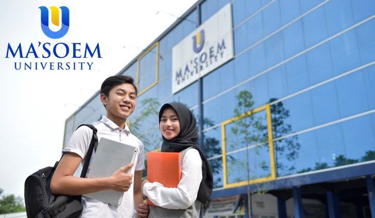
Universitas Al Ma’soem atau yang sekarang lebih dikenal dengan sebutan Ma’soem University atau biasa disingkat M.U. merupakan universitas yang didirikan oleh Yayasan Al Ma’soem Bandung. Kampus Ini pada mulanya didirikan dengan nama AMIK Al Ma'soem dimana alumni dianjurkan untuk mengembangkan beberapa perusahaan milik Masoem Group. Adapun unit usaha yang didirikan oleh Al Ma’soem antara lain:
- Dunia Migas/SPBU Pertamina
- Toko/Mini Market
- Air Minum Dalam Kemasan (Air Minum Al Ma’soem)
- Bank Syariah (BPRS Al Ma’soem)
- Apotek Al Ma’soem
- Bengkel / Otomotif (Khas Masoem, Al Ma’soem dll)
- Perwakilan/Perusahaan (Media, Jaringan, Emakli Al Ma’soem dll)
Namun seiring berjalannya waktu, kampus ini semakin diminati masyarakat sehingga para lulusannya tidak hanya ditempatkan di perusahaan Masoem Group, tetapi juga di perusahaan lain baik regional, maupun nasional. Kampus Masoem University berlokasi di daerah Bandung Timur yang berbatasan langsung dengan kawasan pendidikan Jatinangor. Dengan Lokasi yang sangat strategis, yaitu hanya sekitar 4 menit dari gerbang tol cileunyi, dan sekitar 35 menit dari kawasan Nagreg dan perbatasan kota daerah Priangan Timur sekaligus termasuk kawasan pendidikan Jatinangor, Masoem University menjadi salah satu kampus swasta favorit bagi calon mahasiswa baik di Jawa Barat maupun daerah lainnya di Indonesia. Selain itu, lokasi kampus yang sangat dekat dengan kawasan industri, seperti salah satu Pabrik Terbesar di Indonesia yaitu PT Kahatex dan pabrik-pabrik lain, membuat Kampus Masoem University menjadi salah satu pilihan favorit bagi Mahasiswa yang mengambil kelas sore/karyawan. Kampus Masoem University juga memiliki Asrama khusus untuk mahasiswa yang berdomisili cukup jauh dari lokasi kuliah dengan biaya sangat terjangkau namun disertai fasilitas yang memadai. Dengan konsep "Pesantren Mahasiswa", pengelola asrama akan membuat sebuah kebijakan yang "Bebas Bertanggung Jawab Sesuai Norma Islami".
Dengan komitmen kuat untuk mencetak ahli madya dan sarjana yang berkompeten, Kampus Ma’soem University membuka sebelas prodi/program studi dari lima Fakultas:
Fakultas Komputer
- Sistem Informasi (S1)
- Digital Bisnis (S1)
- Komputerisasi Akuntansi (D3)
Fakultas Ekonomi Bisnis Islam
- Perbankan Syariah (S1)
- Manajemen Bisnis Syariah (S1)
Fakultas Pertanian
- Agribisnis (S1)
- Teknologi Pangan (S1)
Fakultas Keguruan dan Ilmu Pendidikan
- Pendidikan Bahasa Inggris (S1)
- Pendidikan Bimbingan dan Konseling (S1)
Fakkultas Teknik
- Teknik Industri (S1)
- Teknik Informatika (S1)


 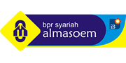
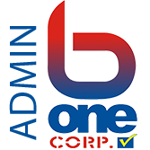
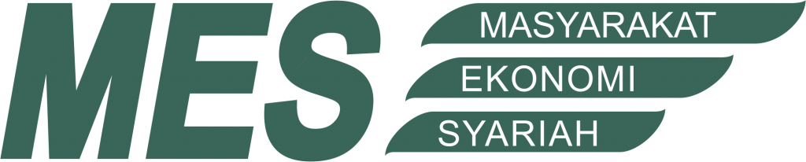
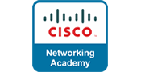
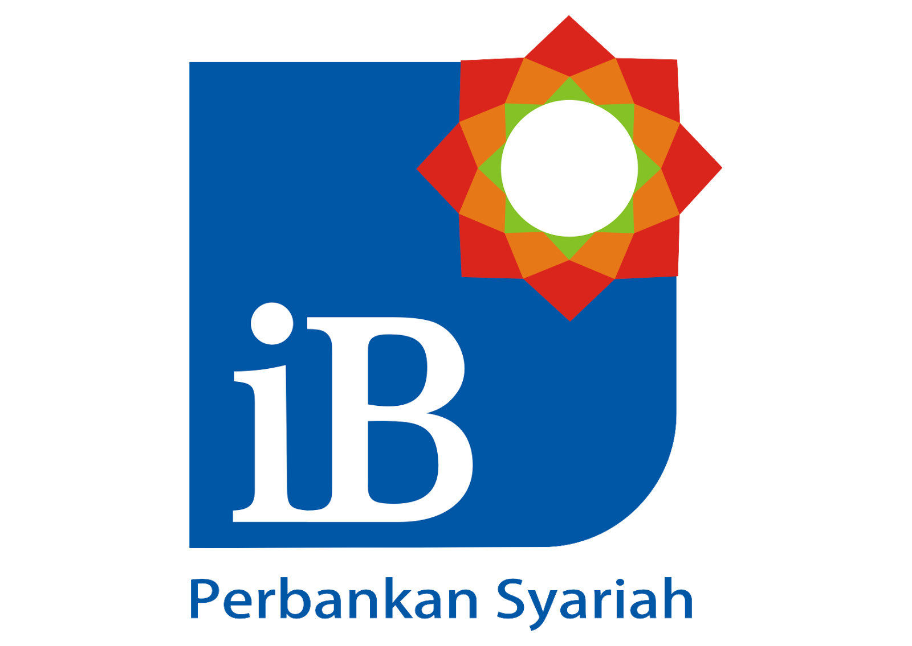
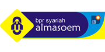
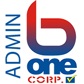
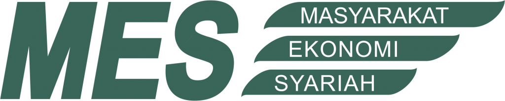
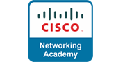
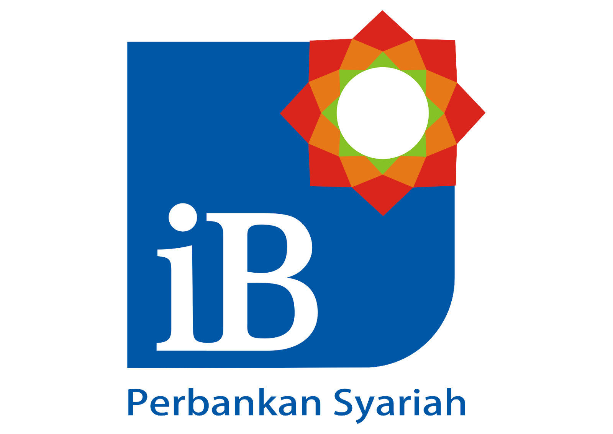